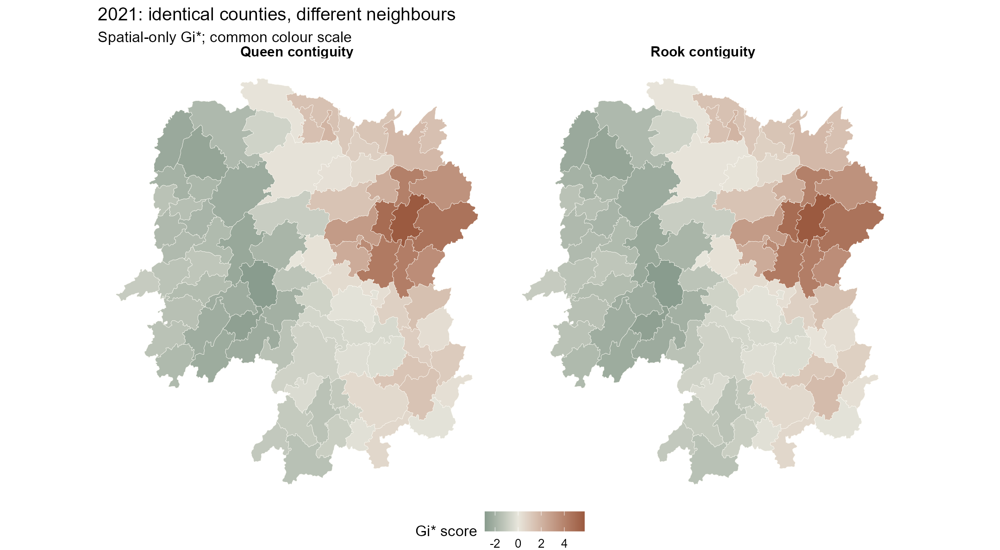
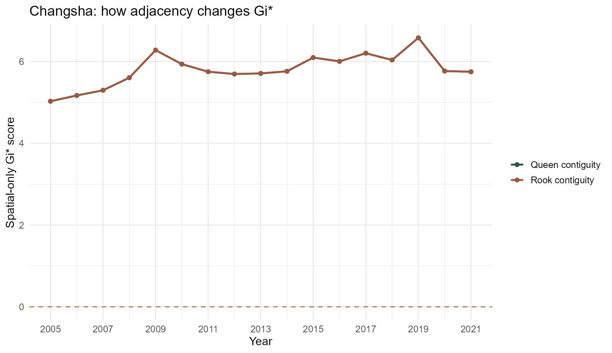
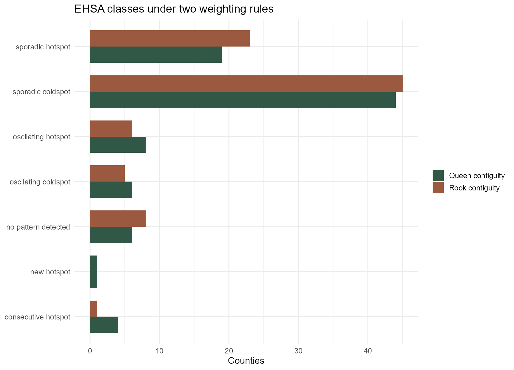
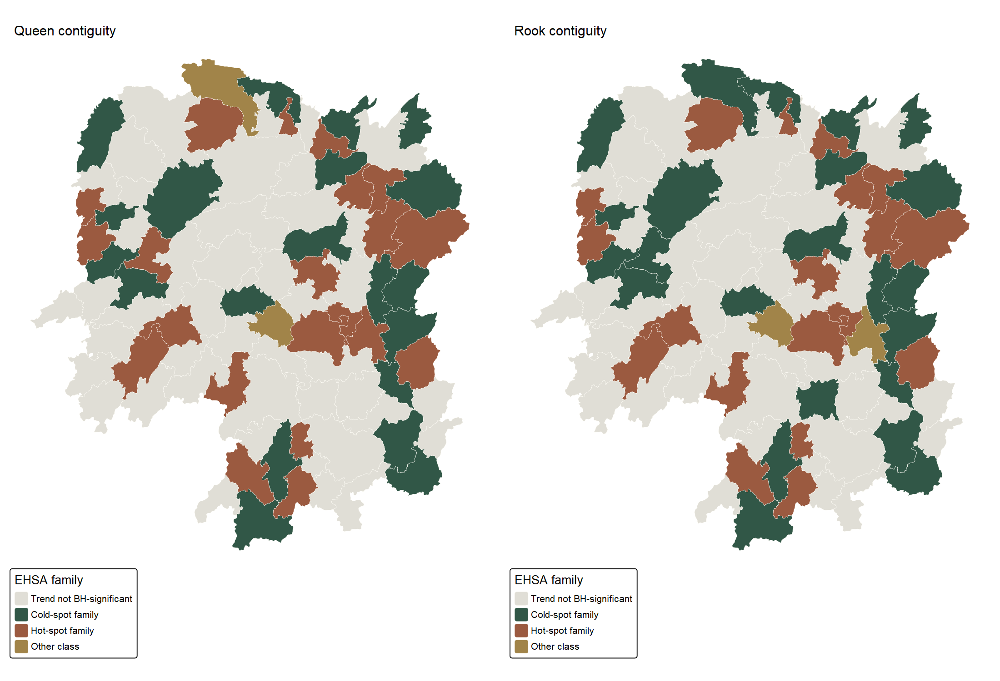

Show R code
source("In-class_Ex/In-class_Ex05/prepare.R", encoding = "UTF-8")
cube <- sfdep::spacetime(gdppc05, hunan05,
.loc_col = "County", .time_col = "Year")
stopifnot(sfdep::is_spacetime_cube(cube))A Queen-versus-rook sensitivity check for Hunan GDP per capita
yufanyou2025
October 3, 2026
Chapter 11 of R for Geospatial Data Science and Analytics develops an emerging-hot-spot analysis (EHSA) from a Hunan county space-time cube. My In-class Exercise 5 already follows the classroom version of that sequence. For Exercise 6 I wanted to test one decision that the sequence leaves open: would a stricter definition of neighbours materially change the result?
I keep the chapter’s data, 2005–2021 period, Gi–Mann–Kendall–EHSA sequence, one-year lag, and sfdep methods. The baseline counts counties that touch at either an edge or a vertex (Queen* contiguity). The comparison counts only shared edges (rook contiguity). Both include the county itself for Gi* and use inverse-distance weights. This is a sensitivity analysis, not a second dataset or an independent confirmation of the pattern.
Open the complete RStudio script. The page runs it from a clean R session; reproduction notes explain the data download and package setup.
I reuse the pinned Hunan shapefile and Hunan_GDPPC.csv from Exercise 5. Its preparation script checks file hashes, 88 unique counties, 17 complete years, positive GDPPC values and valid polygons. It then projects the boundaries to EPSG:32650. I also preserve the polygon row order within each year: the source CSV and shapefile begin with different counties, and a positional mismatch would silently attach the wrong neighbours.
| Validation / neighbourhood check | Result |
|---|---|
| Counties | 88 |
| Years | 17 |
| County-year records | 1496 |
| Counties with different neighbour counts | 8 |
| Minimum Queen neighbours with self | 2 |
| Maximum Queen neighbours with self | 12 |
| Minimum rook neighbours with self | 2 |
| Maximum rook neighbours with self | 11 |
Only 8 of 88 counties have a different number of direct neighbours under rook rather than Queen contiguity. That sounds small, but EHSA uses spatial and temporal neighbourhoods repeatedly, so a change at a few locations can affect the eventual classes elsewhere. I keep the weight calculation and random seeds fixed to isolate the adjacency choice as far as the implementation permits.
queen_cube <- cube |>
sfdep::activate("geometry") |>
dplyr::mutate(nb = sfdep::include_self(sfdep::st_contiguity(geometry)),
wt = sfdep::st_inverse_distance(nb, geometry,
scale = 1, alpha = 1)) |>
sfdep::set_nbs("nb") |>
sfdep::set_wts("wt")
rook_cube <- cube |>
sfdep::activate("geometry") |>
dplyr::mutate(nb = sfdep::include_self(
sfdep::st_contiguity(geometry, queen = FALSE)),
wt = sfdep::st_inverse_distance(nb, geometry,
scale = 1, alpha = 1)) |>
sfdep::set_nbs("nb") |>
sfdep::set_wts("wt")Following the chapter, I calculate a spatial-only Gi* for each county in each year. Here I use 499 conditional permutations per year, a fixed seed, and a two-sided test. The saved annual county results include both raw simulated p-values and Benjamini–Hochberg (BH) q-values calculated separately within each 88-county year. A positive Gi* is relative evidence of nearby high values; it is not a measure of household welfare.

The 2021 county scores have a Spearman rank correlation of 0.998. The median absolute county difference is 0.000 and 0 scores switch sign. The median is zero because most counties have the same direct neighbour list under both rules; it does not mean every score is unchanged. The year-by-year sensitivity table makes that distinction visible.
The chapter follows Changsha over time. In this extract its two lines coincide because its neighbour list is unchanged by this particular Queen-to-rook switch. That is a useful negative result: I should not manufacture a difference just because I drew two lines.

| Neighbourhood | Year | Raw p <U+2264> 0.05 | BH q <U+2264> 0.05 |
|---|---|---|---|
| Queen contiguity | 2005 | 16 | 0 |
| Queen contiguity | 2021 | 19 | 0 |
| Rook contiguity | 2005 | 16 | 0 |
| Rook contiguity | 2021 | 18 | 8 |
I then run a Mann–Kendall test on each county’s 17 annual spatial-only Gi* scores, as in the workbook. The test concerns a monotonic tendency in local concentration, not growth in GDPPC itself. I adjust its 88 p-values by BH within each neighbourhood specification. The complete trend table retains tau, p and q for every county.
For Changsha, tau is 0.485 under both rules. The corresponding Queen p-value is 0.00742. The overlap is consistent with its identical neighbour lists. Across all counties, 38 Queen-based and 39 rook-based trends pass BH q ≤ 0.05. This does not imply that the two sets contain exactly the same counties.
Finally, I apply emerging_hotspot_analysis() to each cube with k = 1, 99 simulations, a 0.01 classification threshold and the corresponding neighbour/weight columns. I reset the seed before each run. The package’s EHSA routine uses time-lagged Gi*, so its classifications are not simply labels attached to the annual spatial-only scores above.

| Neighbourhood | Package class | Counties |
|---|---|---|
| Queen contiguity | sporadic coldspot | 44 |
| Queen contiguity | sporadic hotspot | 19 |
| Queen contiguity | oscilating hotspot | 8 |
| Queen contiguity | no pattern detected | 6 |
| Queen contiguity | oscilating coldspot | 6 |
| Queen contiguity | consecutive hotspot | 4 |
| Queen contiguity | new hotspot | 1 |
| Rook contiguity | sporadic coldspot | 45 |
| Rook contiguity | sporadic hotspot | 23 |
| Rook contiguity | no pattern detected | 8 |
| Rook contiguity | oscilating hotspot | 6 |
| Rook contiguity | oscilating coldspot | 5 |
| Rook contiguity | consecutive hotspot | 1 |
The detailed class agrees for 75 of the 88 counties and changes for 13. The county comparison file identifies every transition; for example, Luxi is a “new hotspot” under Queen contiguity but a “sporadic hotspot” under rook contiguity. This is a change in classification, not evidence that the underlying GDPPC observation changed.

For readability the map groups detailed labels into hot-spot and cold-spot families and greys out counties whose trend does not pass BH q ≤ 0.05. The EHSA results table retains exact package labels. In this installed sfdep version, the built-in class uses simulated bin p-values without applying FDR correction to every space-time bin. My annual BH check and the mapped trend BH check are separate safeguards; they do not turn this into an exact replica of Esri’s FDR-corrected EHSA. With 99 simulations, class boundaries should also be treated as exploratory rather than very fine-grained evidence.
The broad 2021 Gi* picture is robust to this particular neighbour change, but 13 detailed EHSA classes are not. That contrast taught me to separate map-level similarity from county-level classification stability. I also learned that a spatially unchanged county such as Changsha can have an identical annual curve even while the classification table changes elsewhere. The bigger limitation is that the class data do not establish a price deflator or boundary changes across 2005–2021, and GDPPC is not a direct measure of residents’ living standards. Neighbour definitions are analytical choices, not causal mechanisms.